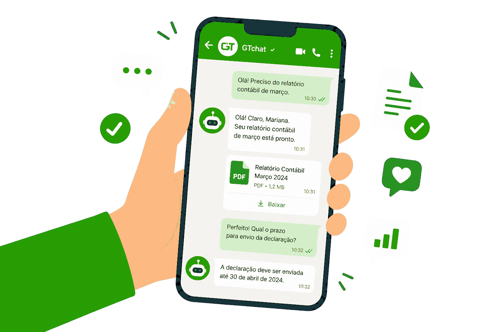

Entendem antes de responder
Reconhecem intenção, cliente, assunto e informações necessárias.

Atendimento contábil inteligente
Agentes de IA personalizados conectam conversas, documentos e rotinas contábeis dentro do WhatsApp.
Agendar demonstraçãoO agente de IA entende solicitações, coleta informações e mantém cada conversa conectada ao histórico do cliente.

Cada etapa segue regras definidas pelo escritório, com encaminhamento humano quando necessário.
Conheça os fluxos →Mensagens, prazos, documentos, sistemas contábeis e suporte humano trabalham em uma única jornada.
Tecnologia com propósito
Reconhecem intenção, cliente, assunto e informações necessárias.
Solicitam documentos, consultam dados e atualizam registros.
O atendimento humano entra com todo contexto já organizado.
Cada agente é configurado para rotinas e padrões do escritório.
Mais clareza para equipe. Mais agilidade para clientes.
“Centralizamos conversas e documentos sem perder o atendimento próximo.”Escritório contábil
“Os agentes de IA assumem rotinas repetitivas e nossa equipe ganha foco.”Gestão de atendimento
“Agora cada solicitação possui histórico, responsável e andamento.”Operação contábil
Configure agentes de IA personalizados para sua operação contábil.
Agendar demonstração